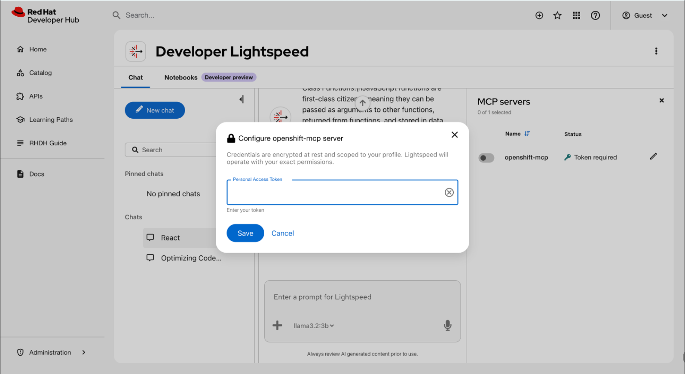

Interacting with Model Context Protocol tools for Red Hat Developer Hub
Leveraging the Model Context Protocol (MCP) server to integrate Red Hat Developer Hub (RHDH) with AI clients
Abstract
- Preface
- 1. Model Context Protocol
- 2. Install MCP server and tool plugins to expose portal capabilities to the AI
- 3. Configure MCP tokens and endpoints to authorize client access
- 4. Store personal access tokens securely to authorize AI workflows on your behalf
- 5. Enable Software Catalog MCP tools to allow the AI to query component metadata
- 6. Enable TechDocs MCP tools to allow the AI to read and analyze internal documentation
- 7. Automate Software Templates by using Scaffolder MCP tools
- 8. Automate software resource creation with Scaffolder MCP tools
- 9. Troubleshoot MCP server and client problems
Preface
Leverage the Model Context Protocol (MCP) server to integrate Red Hat Developer Hub with AI clients through a standardized method for accessing RHDH information and workflows using defined MCP tools.
Chapter 1. Model Context Protocol
Model Context Protocol (MCP) connects AI applications to external systems, enabling Developer Hub MCP tools through the mcp-actions-backend plugin.
This section describes Developer Preview features in the Model Context Protocol plugin. Developer Preview features are not supported by Red Hat in any way and are not functionally complete or production-ready. Do not use Developer Preview features for production or business-critical workloads. Developer Preview features provide early access to functionality in advance of possible inclusion in a Red Hat product offering. Customers can use these features to test functionality and provide feedback during the development process. Developer Preview features might not have any documentation, are subject to change or removal at any time, and have received limited testing. Red Hat might provide ways to submit feedback on Developer Preview features without an associated SLA.
For more information about the support scope of Red Hat Developer Preview features, see Developer Preview Support Scope.
Model Context Protocol (MCP) connects AI models and applications (MCP clients) to external systems (MCP servers) to access information and workflows. MCP servers define the tools that MCP clients can interact with. Red Hat Developer Hub (RHDH) supports MCP tools through the mcp-actions-backend plugin available in Backstage 1.40 or later.
You must verify that your model supports tool calling before you enable Model Context Protocol (MCP) features. Using an incompatible model results in error messages.
Chapter 2. Install MCP server and tool plugins to expose portal capabilities to the AI
Install the Model Context Protocol (MCP) server and its associated tool plugins to expose Red Hat Developer Hub portal capabilities, such as the Software Catalog and TechDocs, to your external AI assistant.
The backend MCP server plugin runs the MCP tools, while the individual tool plugins expose specific capabilities for the Software Catalog, TechDocs, and Scaffolder features.
2.1. Install the backend MCP server plugin
To run MCP tools within RHDH, you must add the MCP server plugin to your configuration. This installation enables the backend infrastructure required to manage MCP actions.
Prerequisites
- Your RHDH instance is installed and running.
Procedure
In your dynamic plugins ConfigMap (for example,
dynamic-plugins-rhdh.yaml), add the updated MCP server plugin:plugins: - package: oci://ghcr.io/redhat-developer/rhdh-plugin-export-overlays/backstage-plugin-mcp-actions-backend:<tag> disabled: falsewhere:
<tag>Enter your RHDH version of Backstage and the plugin version, in the format
bs_<backstage-version>__<plugin-version>(note the double underscore delimiter). To find these versions, complete the following steps:- Find your Backstage version in the RHDH release notes preface.
Locate the plugin version in the Dynamic Plugins Reference guide. For example, for RHDH 1.9 based on Backstage 1.45.3, use the format
bs_1.45.3__<plugin-version>.TipTo ensure environment stability, use a SHA256 digest instead of a version tag. See Determining SHA256 Digests.
Verification
- Confirm the plugins are active by checking the RHDH logs for "loaded" status messages, or by verifying that the corresponding MCP tools appear in your product tool registry.
2.2. Install the MCP tool plugins
Install individual extras plugins to expose specific capabilities for the Software Catalog, TechDocs, and Scaffolder features.
The previous MCP plugins (software-catalog-mcp-tool and techdocs-mcp-tool) are deprecated and no longer updated. You must use the new extras versions listed in the following procedure to receive updates and new features.
Prerequisites
- Your RHDH instance is installed and running.
Procedure
Install any of the following MCP tools that you want to use:
Software Catalog MCP extras:
- package: oci://ghcr.io/redhat-developer/rhdh-plugin-export-overlays/red-hat-developer-hub-backstage-plugin-software-catalog-mcp-extras:<tag> disabled: falsewhere:
<tag>Enter your RHDH version of Backstage and the plugin version, in the format
bs_<backstage-version>__<plugin-version>(note the double underscore delimiter). To find these versions, complete the following steps:- Find your Backstage version in the RHDH release notes preface.
Locate the plugin version in the Dynamic Plugins Reference guide. For example, for RHDH 1.9 based on Backstage 1.45.3, use the format
bs_1.45.3__<plugin-version>.TipTo ensure environment stability, use a SHA256 digest instead of a version tag. See Determining SHA256 Digests.
TechDocs MCP extras:
- package: oci://ghcr.io/redhat-developer/rhdh-plugin-export-overlays/red-hat-developer-hub-backstage-plugin-techdocs-mcp-extras:<tag> disabled: false
where:
<tag>Enter your RHDH version of Backstage and the plugin version, in the format
bs_<backstage-version>__<plugin-version>(note the double underscore delimiter). To find these versions, complete the following steps:- Find your Backstage version in the RHDH release notes preface.
Locate the plugin version in the Dynamic Plugins Reference guide. For example, for RHDH 1.9 based on Backstage 1.45.3, use the format
bs_1.45.3__<plugin-version>.TipTo ensure environment stability, use a SHA256 digest instead of a version tag. See Determining SHA256 Digests.
Scaffolder MCP extras:
- package: oci://ghcr.io/redhat-developer/rhdh-plugin-export-overlays/red-hat-developer-hub-backstage-plugin-scaffolder-mcp-extras:<tag> disabled: falsewhere:
<tag>Enter your RHDH version of Backstage and the plugin version, in the format
bs_<backstage-version>__<plugin-version>(note the double underscore delimiter). To find these versions, complete the following steps:- Find your Backstage version in the RHDH release notes preface.
Locate the plugin version in the Dynamic Plugins Reference guide. For example, for RHDH 1.9 based on Backstage 1.45.3, use the format
bs_1.45.3__<plugin-version>.TipTo ensure environment stability, use a SHA256 digest instead of a version tag. See Determining SHA256 Digests.
Verification
- Confirm the plugins are active by checking the RHDH logs for "loaded" status messages, or by verifying that the corresponding MCP tools appear in your product tool registry.
Chapter 3. Configure MCP tokens and endpoints to authorize client access
Configure Model Context Protocol (MCP) server endpoints, database backends, and authentication tokens to securely authorize client applications to interact with your developer portal.
This configuration is a prerequisite for MCP clients to use the defined MCP tools and access the exposed capabilities of RHDH.
Prerequisites
Procedure
In your Red Hat Developer Hub
app-config.yamlfile, configure a static token for authentication against the MCP server endpoint. MCP clients (such asCursor,Continue, orLightspeed Core) use these tokens to authenticate against the Backstage MCP server. For example:backend: auth: externalAccess: - type: static options: token: ${MCP_TOKEN} subject: mcp-clientswhere:
${MCP_TOKEN}Set the token value that you generate manually and share with your MCP clients.
NoteTokens must be long and complex strings without whitespace to prevent brute-force guessing.
- To generate a sample token, use the following command:
$ node -p `require("crypto").randomBytes(24).toString("base64")`
Register the MCP tools that you install as a plugin source in your
app-config.yamlfile:To use the installed
extrasplugins, you must register them as plugin sources:backend: actions: pluginSources: - software-catalog-mcp-extras - techdocs-mcp-extras - scaffolder-mcp-extrasTo fetch entities or manage components, you must register the catalog plugin source. If your workflow requires scaffolding tools, you must also register the scaffolder plugin source. These plugins are optional and required only when using these specific tools.
backend: actions: pluginSources: - catalog - scaffolderIf you are using OpenAI models with the RHDH MCP server, add the following configuration to your
app-config.yamlfile to disable namespaced toolnames:mcpActions: namespacedToolNames: false
# Full
app-config.yamlfile example with MCP configuration app: title: AI Dev Developer Hub baseUrl: "${RHDH_BASE_URL}" auth: environment: development session: secret: "${BACKEND_SECRET}" providers: guest: dangerouslyAllowOutsideDevelopment: true backend: actions: pluginSources: - software-catalog-mcp-extras - techdocs-mcp-extras - scaffolder-mcp-extras - catalog - scaffolder auth: externalAccess: - type: static options: token: ${MCP_TOKEN} subject: mcp-clients keys: - secret: "${BACKEND_SECRET}" baseUrl: "${RHDH_BASE_URL}" cors: origin: "${RHDH_BASE_URL}" signInPage: oidc
3.1. Configure MCP clients to access the RHDH server
Configure Model Context Protocol (MCP) client applications with server URLs and authentication to enable interaction with the RHDH server.
You must configure an MCP client before it can interact with the MCP server. For a list of supported clients and their specific configurations, see Example Clients.
Prerequisites
You have one of the following endpoints for the server URL, where
<my_developer_hub_domain>is the hostname of your RHDH instance.-
Streamable:
https://<my_developer_hub_domain>/api/mcp-actions/v1 SSE (Legacy):
`https://<my_developer_hub_domain>/api/mcp-actions/v1/sseNoteSome clients do not yet support the Streamable endpoint. Use the SSE (Legacy) endpoint if your client requires it.
-
Streamable:
-
You have set the
MCP_TOKENenvironment variable in your MCP server configuration as the bearer token for authentication.
Procedure
Configure Developer Lightspeed for RHDH as a client. For more details, see {developer-lightspeed-link}[Red Hat Developer Lightspeed for Red Hat Developer Hub].
In the
lightspeed-stack.yamlconfiguration, add the followingmcp_serversconfiguration:mcp_servers: - name: mcp::backstage provider_id: model-context-protocol url: https://<my_developer_hub_domain>/api/mcp-actions/v1 authorization_headers: Authorization: "client"model-context-protocol-
Enter the tool runtime provider defined in the llama-stack
run.yamlconfiguration for LCORE.
Optional: To use a custom Llama Stack configuration, add the following code to the
run.yamlLlama Stack configuration file.providers: tool_runtime: - provider_id: model-context-protocol provider_type: remote::model-context-protocol config: {}To authorize requests to the MCP endpoint using
<MCP_TOKEN>, add one or more servers to themcpServerslist in the Developer Lightspeed for RHDHapp-config.yamlfile, to make POST requests to LCORE:lightspeed: mcpServers: - name: mcp::backstage token: ${MCP_TOKEN} - name: _<mcp_server_name>_ token: ${MCP_TOKEN_2}where:
name- Enter the server name. This must match the name configured in the LCORE.
token- Optional: Enter the static token used to authorize requests. You can also configure the token through the MCP Server Settings in the Developer Lightspeed for RHDH user interface. The setting remains disabled until you configure the token.
Optional: Query the LCORE
/v1/streaming_queryendpoint directly by providing theMCP_TOKENin the header:curl -X POST \ -H `Content-Type: application/json` \ -H `MCP-HEADERS: {"mcp::backstage": {"Authorization": "Bearer <MCP_TOKEN>"}}` \ -d `{"query": "Can you give me all catalog templates of type 'service', "model": "gpt-4o-mini", "provider": "openai"}` \ _<url>_/v1/streaming_querywhere:
<url>-
Enter the LCORE endpoint. Use
localhostor the service namepass:c,a,q:[<RHDH_servicename>.my-rhdh-project.svc.cluster.local:8080]if you are inside the Backstage container.
Configure Cursor as a client.
From your Desktop app, navigate to Cursor Settings, select MCP Tools > New MCP Server and add the following configuration:
{ "mcpServers": { "backstage-actions": { "url": "https://<my_developer_hub_domain>/api/mcp-actions/v1", "headers": { "Authorization": "Bearer <mcp_token>" } } } }where:
<mcp_token>- Enter the previously configured static token
<my_developer_hub_domain>- Enter the hostname of your RHDH instance
Configure Continue as a client.
In your agent yaml configuration file, add the following configuration:
mcpServers: - name: backstage-actions type: sse url: https://<my_developer_hub_domain>/api/mcp-actions/v1/sse requestOptions: headers: Authorization: "Bearer <mcp_token>"where:
<mcp_token>- Enter the previously configured static token
<my_developer_hub_domain>- Enter the hostname of your RHDH instance
Chapter 4. Store personal access tokens securely to authorize AI workflows on your behalf
When using third-party MCP integrations, you can store your personal access tokens securely and manage credentials in Red Hat Developer Lightspeed for Red Hat Developer Hub so that the AI acts on your behalf.
4.1. Enable encryption and database storage for MCP server tokens
To protect sensitive credentials and persist user preferences, you must configure encryption and database settings in the app-config.yaml file.
Configuring encryption prevents the system from storing Model Context Protocol (MCP) tokens as plain text in the database.
Prerequisites
- You have administrator access to the RHDH environment.
-
Your backend secet is available in the
BACKEND_SECRETenvironment variable.
Procedure
To enable encryption for MCP server tokens, add the following snippet to the
backendsection of yourapp-config.yamlfile:backend: auth: keys: - secret: ${BACKEND_SECRET}To store MCP server user preferences, configure the database connection. Use the configuration example that matches your environment:
Local development (In-memory):
backend: database: client: better-sqlite3 connection: ':memory:'Local path storage:
backend: database: client: better-sqlite3 connection: directory: './sqlite-data'Deployed PostgreSQL database:
backend: database: client: pg connection: host: localhost port: 5432 user: ${POSTGRES_USER} password: ${POSTGRES_PASSWORD}
Verification
-
Restart the RHDH instance and ensure no errors appear in the logs related to the
backend-authordatabaseplugins.
4.2. Toggle MCP tools in the chat interface to control the data context provided to the AI
Use the Red Hat Developer Lightspeed for Red Hat Developer Hub chat interface options to securely configure your personal tokens, toggle specific Model Context Protocol (MCP) services, and directly control the data context made available to the AI assistant.
You can use the MCP settings panel in the Developer Lightspeed for RHDH chat interface to review server status and enable or disable specific tools for your session.
Prerequisites
- An administrator has configured encryption and database storage for the backend.
- You have a valid Personal Access Token for the MCP servers you want to enable.
Procedure
- In the Red Hat Developer Lightspeed for Red Hat Developer Hub chat box, click the Chatbot options menu icon in the header.
Select MCP settings.

In the MCP settings panel, perform any of the following actions to configure your session:
- Review server status: View whether available MCP servers are enabled or disabled.
- View available tools: View the count of specific tools available for each server under Status.
Configure personal tokens:
- To add or update a token, click the Edit icon, enter your Personal Access Token in the field, and click Save. The system validates the token automatically.
To remove or replace a token, click the Edit icon and select Forget Token.

Enable or disable servers: Use the toggles to select which servers provide tools for your chat session.
NoteYou must configure a token before you can enable a server that requires authentication.
Verification
- Submit a query in the chat that requires an MCP tool, such as requesting catalog resources or server information.
- If you enabled a server, verify that the response contains data from that specific MCP tool.
- If you disabled a server, verify that Developer Lightspeed for RHDH uses standard documentation or general knowledge instead of the MCP tool to provide the response.
Chapter 5. Enable Software Catalog MCP tools to allow the AI to query component metadata
Enable and use the Software Catalog MCP tools so that the AI assistant can seamlessly query internal software component metadata, relations, and ownership information on your behalf.
Use Software Catalog MCP tools to manage and retrieve RHDH entities such as Components, Systems, Resources, APIs, Locations, Users, and Groups.
Software Catalog tool reference:
The software-catalog-mcp-extras plugin provides tools to interact with the software catalog. By default, these tools return data in a JSON array format.
The following table lists the available tools in the software-catalog-mcp-tool plugin:
| Tool | Description | Parameters |
|---|---|---|
|
|
Lists RHDH entities such as components, APIs, and resources. |
|
|
|
Registers a new entity in the software catalog using a |
|
|
|
Removes an existing entity from the software catalog. |
|
|
|
Retrieves metadata for a specific software template. |
|
5.1. Fetch entities using fetch-catalog-entities
List Developer Hub entities including components, APIs, and resources using the fetch-catalog-entities tool.
The fetch-catalog-entities tool lists RHDH entities, including components, APIs, and resources.
Common query examples: * "Fetch all ai-model resources in the Backstage catalog" * "Fetch the API definition for the beneficiary-management-api API" * "Construct a curl command based on the API definition for the “insert beneficiary” endpoint in the beneficiary-management-api"
The following table lists the parameters for the fetch-catalog-entities tool:
| Parameter | Description | Example |
|---|---|---|
|
|
Filters by entity kind. |
|
|
|
Filters by entity type. [NOTE]: You must use the |
|
|
|
Specifies a specific entity name. |
|
|
|
Filters entities by their owner. |
|
|
|
Filters entities by their lifecycle. |
|
|
|
Filters entities by their tags. |
|
|
|
Retrieves the full Backstage entity object instead of a shortened output when set to |
|
5.2. Register entities using catalog-register-tool
Add new entities to the Software Catalog using the catalog-register-tool.
Use the catalog-register-tool to add new entities to your Software Catalog.
Table 5.1. catalog-register-tool parameters
| Parameter | Description |
|---|---|
|
|
The URL to the |
5.3. Unregister entities using catalog-unregister-tool
Remove existing entities from the Software Catalog using the catalog-unregister-tool.
Use the catalog-unregister-tool to remove an existing entity from the Software Catalog.
The following table lists the parameters for the catalog-unregister-tool:
| Parameter | Description |
|---|---|
|
|
A valid catalog location URL or a UUID. |
5.4. Retrieve Software Template metadata
Retrieve metadata for specific Software Templates using the software-template-metadata-tool.
Use the software-template-metadata-tool to retrieve metadata for a specific Software Template.
The following table lists the parameters for the software-template-metadata-tool:
| Parameter | Description |
|---|---|
|
|
The reference identifier for the Software Template. |
Chapter 6. Enable TechDocs MCP tools to allow the AI to read and analyze internal documentation
Enable and use TechDocs MCP tools to allow the AI assistant to search, read, and analyze your internal technical documentation to resolve queries with accurate portal data.
The TechDocs MCP tool enables MCP clients to search and retrieve documentation from RHDH for use as context in AI applications.
The following table lists the TechDocs tools and parameters:
| Tool | Description | Parameters |
|---|---|---|
|
|
Lists all entities with registered TechDocs. Includes metadata such as |
|
|
|
Calculates the percentage of entities with TechDocs configured to identify documentation gaps. |
|
|
|
Retrieves the content of a specific TechDocs resource. |
|
6.1. Retrieve TechDocs URLs and metadata using fetch-techdocs
List all Backstage entities with TechDocs including URLs, metadata, timestamps, and build information using the fetch-techdocs tool.
The fetch-techdocs TechDocs MCP tool lists all Backstage entities with TechDocs. By default, the tool returns results in a JSON array format. Each entry includes entity details and TechDocs metadata, like last update timestamp and build information.
By default, each entry in the JSON array is an entity with the following fields: name, title, tags, description, owner, lifecycle, namespace, kind, techDocsUrl, matadataUrl, and metadata.
The following examples show common queries:
- “Fetch all techdocs from the Backstage server”
- “Fetch all techdocs of the default namespace”
- “Fetch all techdocs created by user:john.doe”
Table 6.1. fetch-techdocs TechDocs MCP tool.
| Name | Description | Example |
|---|---|---|
|
|
Filters entities by their type. |
"Component" |
|
|
Filter entities by their namespace. |
"default" |
|
|
Filters entities by owner. |
"user:john.doe" |
|
|
Filters entities by their lifecycle. |
"development" |
|
|
Filters entities by their tags. |
["genai, "ibm", "llm", "granite", "conversational", "task-text-generation"] |
6.2. Measure documentation gaps using analyze-techdocs-coverage
Calculate documentation coverage percentage and identify gaps using the analyze-techdocs-coverage tool with entity attribute filters.
The analyze-techdocs-coverage TechDocs MCP tool calculates the percentage of entities that have TechDocs configured. Use this tool to identify documentation gaps and improve overall documentation coverage.
You can filter results by the following entity attributes: * type * namespace * owner * lifecycle * tags By default, analyze-techdocs-coverage returns a JSON entity that includes the totalEntities, entitiesWithDocs, and coveragePercentage fields.
The following examples show common queries:
- “What is the coverage of techdocs in the backstage server”
- “What is the coverage of techdocs in the default namespace”
The following table lists the parameters for the analyze-techdocs-coverage TechDocs MCP tool:
| Name | Description | Example |
|---|---|---|
|
|
Filters entities by their type. |
"Component" |
|
|
Filter entities by their namespace. |
"default" |
|
|
Filters entities by owner. |
"user:john.doe" |
|
|
Filters entities by their lifecycle. |
"development" |
|
|
Filters entities by their tags. |
["genai, "ibm", "llm", "granite", "conversational", "task-text-generation"] |
6.3. Find a specific TechDoc using retrieve-techdocs-content
Retrieve TechDocs content for specific Software Catalog entities using the retrieve-techdocs-content tool with entityRef, name, title, and content fields.
The retrieve-techdocs-content TechDocs MCP tool retrieves the content of a TechDocs resource, enabling AI clients to access documentation content for specific Software Catalog entities. By default, the tool returns a JSON entity with the following fields: entityRef, name, title, kind, namespace, content, path, contentType, lastModified, and metadata.
The following examples show common queries:
- “Fetch techdoc with reference component:default/my-service”
- “Fetch page about.html from techdoc with reference component:default/my-service”
The following table describes the parameters for the retrieve-techdocs-content TechDocs MCP tool.
| Name | Description | Example |
|---|---|---|
|
|
Specifies the entity to retrieve using the |
"component:default/my-service" |
|
|
Specifies the path to a specific documentation page. Defaults to |
"index.html" |
Chapter 7. Automate Software Templates by using Scaffolder MCP tools
Use the Scaffolder Model Context Protocol (MCP) (scaffolder-mcp-extras) tools to query available actions, validate template dry-runs, and retrieve task logs during Software Template development in RHDH.
These tools use provided credentials and adhere to existing role-based access control (RBAC) permissions.
All operations performed through Scaffolder MCP tools use the On Behalf Of the User (OBOU) security model. The system uses the bearer token from the MCP client to ensure that actions adhere to existing RBAC permissions and maintain a consistent audit trail.
7.1. List Scaffolder actions
Use this tool to list all installed Scaffolder actions and their associated metadata. This tool requires no input parameters. The following table describes the output fields.
| Output field | Description |
|---|---|
|
|
List containing action IDs and descriptions. |
|
|
Action identifier (for example, |
|
|
Summary of the action’s function. |
|
|
JSON Schema for input parameters. |
|
|
JSON Schema for output values. |
|
|
Usage examples provided by the action. |
7.2. Get Scaffolder task logs
Retrieve log events for a task to monitor execution progress or diagnose template failures.
The following table describes the input parameters:
| Input parameter | Description | Example |
|---|---|---|
|
|
Unique identifier for a task. |
|
|
|
Optional: Return only events after this event ID. |
|
The following table describes the output parameters:
| Output parameter | Description | Example |
|---|---|---|
|
|
The log output for the specified task ID. Each log entry includes the message, |
|
Chapter 8. Automate software resource creation with Scaffolder MCP tools
You can expose Scaffolder actions to AI agents by using Scaffolder Model Context Protocol (MCP) tools in Red Hat Developer Hub.
These tools enable AI agents to understand and involve Scaffolder capabilities through natural language input within an IDE or chat interface. You can validate template logic by using sandboxed dry-runs and monitor the progress of automated tasks. To maintain security, these tools must adhere to existing role-based access control (RBAC) permissions and maintain a consistent audit trail.
8.1. Software Template validation with Scaffolder dry-run tools
With Software Template validation, you can verify YAML configuration and execution logic in a sandboxed environment. This preliminary testing ensures that your templates function as intended before you deploy them to a production environment.
The validation process involves the following key components:
- User interaction: You must provide the template YAML content, required input values, and any additional files.
-
Agent invocation: The AI agent maps these inputs to the
templateYAML,values, andfilesparameters to call the dry-run tool. -
Outcome processing: The AI agent interprets the
validstatus and execution logs to provide a plain-language summary or troubleshooting steps if validation fails.
8.2. Scaffolder dry-run tool reference
Use this tool to perform a sandboxed dry-run execution of a Scaffolder template.
The following table describes the input fields:
| Input parameter | Description | Example |
|---|---|---|
|
|
Full YAML content of the template. |
|
|
|
Key-value map of required input values. |
|
|
|
Additional files including path and content. |
|
The following table describes the output fields:
| Output field | Description | Example |
|---|---|---|
|
|
Boolean indicating if the template passed validation. |
|
|
|
Summary of the dry-run result. |
|
|
|
List of error messages if |
|
|
|
List of execution log objects. | |
|
|
Log message text from the dry run. |
|
|
|
ID of the step associated with the log. |
|
|
|
Step status, such as |
|
|
|
Template output produced by the dry run. |
|
|
|
List of execution step objects. | |
|
|
ID of the step. |
|
|
|
Display name of the step. |
|
|
|
Action identifier used by the step. |
|
8.3. Software Template execution with Scaffolder MCP tools
Automate resource creation, such as repositories or components, by executing Software Templates through the AI agent.
By using Scaffolder MCP tools, the AI agent interacts directly with your existing software templates to streamline the development lifecycle.
The execution process relies on three core components:
-
User interaction: You must identify a reference for the target template (for example,
template:default/create-node) and provide the necessary inputvaluesandsecrets. -
Agent invocation: The AI agent maps the data to the
templateRef,values, andsecretsparameters to execute the template. -
Outcome processing: The AI agent confirms the execution and provides the
taskIdto the user for progress tracking.
8.4. Scaffolder execution tool reference
Run a Software Template to create repositories, register components, or provision infrastructure.
The following table describes the inputs fields:
| Input parameter | Description | Example |
|---|---|---|
|
|
Entity reference of the target template. |
|
|
|
Key-value map of required input values. |
|
|
|
Optional: Secrets required for execution. |
|
The following table describes the output fields:
|
Output field |
Description |
|
|
ID of the created task used for log tracking. |
8.5. Scaffolder task monitoring with MCP tools
Scaffolder task monitoring provides visibility into the lifecycle of automated resource creation. By using MCP tools, you can track the progress of templates and retrieve execution results for workflows initiated by an AI agent.
Monitoring capabilities include the following features:
- User interaction: You must ask for a status update on your tasks or a list of recent activities.
-
Agent invocation: The AI agent calls the task list tool. To restrict results to only include your own tasks, the agent must set the
ownedparameter totrue. -
Outcome processing: The AI agent filters and summarizes the
tasks[]list, reporting statuses such asprocessing,completed, orfailed.
8.6. Scaffolder tasks list tool reference
Use the Scaffolder tasks list tool to retrieve and filter a list of Scaffolder tasks.
The following table describes the input fields:
| Input parameter | Description | Example |
|---|---|---|
|
|
If |
|
|
|
Maximum number of tasks to return per request. |
|
|
|
Number of tasks to skip for pagination. |
|
The following table describes the output fields:
| Output field | Description | Example |
|---|---|---|
|
|
A list of Scaffolder tasks including ID, timestamps, and status. Statuses include: |
|
Chapter 9. Troubleshoot MCP server and client problems
Diagnose and resolve common issues with MCP server installation, client configuration, and tool execution in Developer Hub.
9.1. Verify successful installation of MCP plugins
Verify MCP plugin installation by checking pod logs for successful plugin loading and MCP tool registration.
Procedure
Log in to the OCP cluster running RHDH and go to your RHDH project using the following code:
$ oc project my-rhdh-project
Inspect the logs for the installation of the RHDH dynamic plugins using the following code:
$ oc logs -c install-dynamic-plugins deployment/<my-product-deployment>
Verification
You must see an entry for the MCP backend server plugin as shown in the following code:
..... prior logs .... ======= Installing dynamic plugin oci://ghcr.io/redhat-developer/rhdh-plugin-export-overlays/backstage-plugin-mcp-actions-backend:<tag> ==> Copying image oci://ghcr.io/redhat-developer/rhdh-plugin-export-overlays/backstage-plugin-mcp-actions-backend:<tag> to local filesystem ==> Successfully installed dynamic plugin oci://ghcr.io/redhat-developer/rhdh-plugin-export-overlays/backstage-plugin-mcp-actions-backend:<tag>
where:
<tag>-
Enter your RHDH version of Backstage and the plugin version, in the format
bs_<backstage-version>__<plugin-version>(note the double underscore delimiter). To find these versions, complete the following steps:
- Find your Backstage version in the RHDH release notes preface.
Locate the plugin version in the Dynamic Plugins Reference guide. For example, for RHDH 1.9 based on Backstage 1.45.3, use the format
bs_1.45.3__<plugin-version>.TipTo ensure environment stability, use a SHA256 digest instead of a version tag. See Determining SHA256 Digests.
You must see entries for any of the MCP tool plugins you installed as shown in the following code:
..... prior logs .... ======= Installing dynamic plugin oci://ghcr.io/redhat-developer/rhdh-plugin-export-overlays/red-hat-developer-hub-backstage-plugin-software-catalog-mcp-tool:<tag> ==> Copying image oci://ghcr.io/redhat-developer/rhdh-plugin-export-overlays/red-hat-developer-hub-backstage-plugin-software-catalog-mcp-tool:<tag> to local filesystem ==> Successfully installed dynamic plugin oci://ghcr.io/redhat-developer/rhdh-plugin-export-overlays/red-hat-developer-hub-backstage-plugin-software-catalog-mcp-tool:<tag>
where:
<tag>-
Enter your RHDH version of Backstage and the plugin version, in the format
bs_<backstage-version>__<plugin-version>(note the double underscore delimiter). To find these versions, complete the following steps:
- Find your Backstage version in the RHDH release notes preface.
Locate the plugin version in the Dynamic Plugins Reference guide. For example, for RHDH 1.9 based on Backstage 1.45.3, use the format
bs_1.45.3__<plugin-version>.TipTo ensure environment stability, use a SHA256 digest instead of a version tag. See Determining SHA256 Digests.
9.2. Check MCP tool logs for status and errors
Review Backstage LoggerService logs for MCP tool execution status and error messages.
The Backstage LoggerService target name starts with the name of the MCP tool (either software-catalog-mcp-tool or techdocs-mcp-tool). The MCP tools generate a log by default. For example:
`[backend]: 2025-09-25T16:24:22.660Z software-catalog-mcp-tool info fetch-catalog-entities: Fetching catalog entities with options: kind="Component"`
If any errors occur in the MCP tools, check the logs.
9.3. MCP tool error messages
MCP tools provide optional error messages that communicate issues including input validation errors encountered during tool use.
The MCP tools response provides an optional error message that communicates any issues encountered during the use of the tool, including potential input validation errors.
9.4. Resolve the Model does not support tool calling error
Resolve tool calling errors by confirming your AI model supports tool calls and switching to a compatible model if needed.
This error indicates that the model configured in your MCP client lacks the required functionality to handle tool calls. The error message appears similar to: Invalid request: model gemma3:27b does not support tool calls.
Procedure
- Consult your model documentation to confirm its support for tool calling.
- If the current model does not support tool calling, change the model that your MCP client uses to a tool-calling compatible model.
9.5. Resolve authentication issues when tools are not found
Verify authentication tokens and configuration settings when Model Context Protocol (MCP) clients connect to the server but do not display deployed tools.
If an MCP client connects to the server but cannot find deployed tools, verify the authentication status and endpoint resolution.
Procedure
Check the token validation status in the Red Hat Developer Lightspeed for Red Hat Developer Hub interface:
- In the Red Hat Developer Lightspeed for Red Hat Developer Hub chat box, click the menu icon (Chatbot options) and select MCP settings.
- Locate the relevant server and check the status message displayed below the token field.
- If the status is Authorization failed. Try again, the token is incorrect, improperly formatted, or missing. You must verify the token value and ensure the server is enabled.
Verify the authentication token configuration.
- Ensure a static token is configured for the RHDH MCP server.
-
In your MCP client, verify that the token is set as the bearer token. The authorization header must use the
Bearer <mcp_token>format.
Check the MCP endpoint configuration.
- Confirm that the MCP server URL properly resolves correctly, particularly when using desktop clients.
- Use legacy SSE endpoint if your MCP client requires it instead of the Streamable endpoint. (For more details, see the Configuration topic).
Verify the RHDH
app-config.yamlfile for formatting errors:-
Ensure there are no duplicate
backendentries and that the YAML indentation is accurate. -
Confirm that the configuration for the static token and MCP plugin sources is nested under an existing
backendfield, if one is present. For a reference configuration, see Configure MCP in RHDH.
-
Ensure there are no duplicate
9.6. Resolve nonsensical MCP tool output
Improve MCP tool output quality by using larger models or models with larger context windows when nonsensical results occur.
Nonsensical output often occurs when smaller models or models with smaller context sizes cannot effectively manage repeated tool calls within the same context window.
Procedure
Select an appropriate model for tool calling.
- Verify that the model has good support for tool calling.
- Make sure your model is not too small. We recommend a model with at least 7 billion parameters and a context window of 32k.
Refine your queries.
- Use more well-defined queries that limit the amount of data returned in the response from the tool.
- If possible, increase the context window size of the model. We recommend at least 32k for these MCP tools.